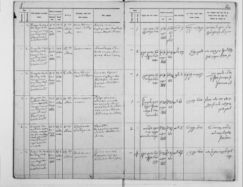

This database owes its existence to the remarkable, indeed unique, contribution of Christine Usdin, a noted artist and sculptor, who set out to translate all surviving Jewish vital records held in the Latvia State Historical Archives. The database is the first that has benefited from the project set up in 2007 by the Latvijas Valsts vēstures arhīvs [Latvian State Historical Archives] to digitize their primary holdings relating to family history and to make them available on-line on their website http://lvva-raduraksti.lv/. Christine Usdin maintains her own websites, which includes her original translations [the source of this database], plus transcriptions and other useful genealogical material at http://www.premiumorange.com/rigavitalrecords and http://usdine.pagesperso-orange.fr. That material has been the source of this database. Other vital records including birth, marriage and divorce are to follow, ensuring that these records can be available worldwide with the benefit of the highly sophisticated search system provided by JewishGen.
The database has 26,288 unique entries, for the places and dates set out in the table below. Additionally, the records usually provide the name of the father of the deceased, and sometimes the spouse, mother, or other relatives, so the total number of individuals mentioned could be over 50,000. Although the Latvijas Valsts vēstures arhīvs [Latvian State Historical Archives] generally has a “cut-off date” of 1909, it has more recent records in some cases. For example, there are also records for 1919-1921 for Mitau [now Jelgava], the capital of Courland. However, most records for any period post-1909 can only be obtained from the bureau dealing with contemporary vital registration. In common with most European countries, issues relating to security and privacy have resulted in a more restricted policy relating to access to individual records for genealogical purposes, and are only available on limited personal application.
The story of the survival (and loss) of Jewish vital records remains to be told. Much has been lost as a result of invasion, dispersal, incursions of war, and other social upheaval. It is interesting that some small but important Jewish communities such as Sassmakken [Latvian name, Valdemārpils] have an excellent run of surviving death records, whereas the other, larger Jewish communities, have only limited vital record registration books, for example, the important Jewish communities of Pilten, Goldingen and Friedrickstadt [Piltene, Kuldīga and Jaunjelgava, respectively].
| Place Name Historic |
Place Name Modern |
# of Entries in Database |
Years Covered |
|---|---|---|---|
| Bausk | Bauska | 3,581 | 1854-1859, 1861-1905 |
| Dvinsk | Daugavpils | 4,342 | 1870, 1872, 1876-1878, 1888, 1894, 1901, 1905, 1908 |
| Friedrikstadt | Jaunjelgava | 57 | 1838, 1847 |
| Glazmanka | Gostiņi | 169 | 1889-1890, 1893-1894, 1896-1899, 1902, 1904, 1906, 1909 |
| Goldingen | Kuldīga | 98 | 1854, 1856 |
| Griwa | Grīva | 147 | 1890, 1900, 1911 |
| Hasenpoth | Aizpute | 1,317 | 1854-1858, 1860-1862, 1864-1905 |
| Jakobstadt | Jēkabpils | 818 | 1870, 1876-1878, 1880-1893 |
| Libau | Liepāja | 3,820 | 1854-1906 |
| Ludsa | Ludza | 72 | 1867-1868, 1875, 1893 |
| Mitau | Jelgava | 4,676 | 1855-1871, 1873-1875, 1878-1883, 1885, 1887, 1890-1892, 1895-1897, 1903, 1906, 1909, 1919-1921 |
| Pilten | Piltene | 61 | 1878, 1887-1889, 1901 |
| Ribinishki | Riebiņi | 53 | 1870, 1882, 1884, 1898-1902, 1904 |
| Rezhitsa | Rēzekne | 2,823 | 1865-1866, 1868-1872, 1874-1880, 1882, 1884-1885, 1887-1892, 1895-1897, 1900, 1902 |
| Sassmakken | Valdemārpils | 704 | 1861-1890, 1892, 1896-1897, 1899-1900, 1902, 1905 |
| Tukkum | Tukums | 1,397 | 1853-1855, 1865-1870, 1874, 1876-1877, 1880-1888, 1890-1898, 1901 |
| Varaklani | Varakļāni | 492 | 1868-1872, 1874-1880, 1882, 1884-1885, 1887-1892, 1895 |
| Vindava | Ventspils | 926 | 1854, 1858-1862, 1864-1879, 1882, 1884, 1886-1901, 1903-1905, 1907-1909 |
| Vilyaka | Viļaka | 1 | 1874 |
| Vishki | Višķi | 100 | 1891-1893, 1897-1908 |
| Zabeln | Sabile | 398 | 1859, 1862-67, 1869, 1872-1873, 1876-1877, 1879-1884, 1889-1890, 1894, 1901, 1903, 1913 |
| Total Records | 26,288 | 1838, 1847, 1853-1909, 1911, 1913, 1919-1921 | |
Death records usually show the place of death, which is not always the place where the individual lived his or her daily life. The Register formats, which followed a state-mandated form for the whole of the Russian Empire, required the place of death and burial, which may be different.
The vast majority of the translated records are translated from Russian, the authorized language for vital record registration in the Russian Empire. Courland was a German-speaking enclave which now makes up modern Latvia. Some records, particularly early ones, are in German.
The soundex search facility is particularly important for these records, because the Jewish community lived and operated using German [particularly in Courland and Riga], Yiddish, and Hebrew. The transliteration of these records reflects the fact that many records will have V’s instead of W’s [for example, "Vipman" instead of "Wippman"], G instead of H [for example, "Germer" instead of "Hermer"], and so on. It is strongly suggested that you take advantage of the wide-ranging soundex facility and use alternative patterns of spelling. For example, I, J and Y are sometimes interchanged in the process of transliteration, such that "Joelsohn", "Yoelson", "Ioelson" can all be used to refer to the same Courland family, who would probably have described themselves as "Joelsohn".
This is a rich and varied database. In fact, it contains only part of the remarkable material collected and translated by Christine Usdin. Please do visit her websites at http://www.premiumorange.com/rigavitalrecords and http://usdine.pagesperso-orange.fr/, where you may find additional family material, for example, cemetery records, photographs of surviving tombstones in Jewish cemeteries, and other sources such as directories, maps etc., that may have additional material relating to the named individuals in this database.
All "Christian" dates before 1918 are according to the Julian calendar, as was used throughout the Russian Empire before 1918. After Latvian independence (1919), the Gregorian calendar was used, so the Christian dates after 1919 are according to the Gregorian (modern) calendar. For the Gregorian (modern) calendar date, add 12 days for dates from March 1800 to February 1900, or add 13 days for dates from March 1900 to February 2100. Hebrew dates are unchanged.
Go to http://lvva-raduraksti.lv/en/register.html and complete the registration process. This step only needs to be completed once. If you wish to view records again, begin at step 2.
Click on the person's underlined name, in the far left column of the search results. (If nothing happens, then follow the instructions as the end of this section to attempt to locate the correct book. Otherwise, proceed to step 3.)
If the cover page of a book of records appears, then proceed to step 4. If prompted to "Sign in", then enter the Username and Password that you selected in step 1. (Note: Signing in will not work in some versions of Internet Explorer. If you have problems, then try a different browser.)
Compare the numbers shown on the cover page for "FONDS", "APRAKSTS", and "LIETA" to the numbers shown in the "Archive / Fond / Aprakst. [List] / Lieta [Item]" section of the search results. If the numbers match, then you should have the correct book, and should proceed to step 5. (If the numbers do not match, then please e-mail Stephen Weinstein so that a correction can be made in the next revision of the database. Also, if the numbers do not match, then you may have the wrong book. If you do not find the desired record, then follow the instructions as the end of this section to attempt to locate the correct book.)
In the top right-hand corner of the screen, there should be two arrows, a number, a /, another number, three rectangles, and the word "Back". These arrows and numbers are used to navigate from one page of the book to another. Click the first number, type the number shown in the "Image" field of the search results, and press the "enter" key on the keyboard. The first number should then match the number shown in the "Image" field of the search results. If this does not work, then use the two arrow keys to navigate through the pages of the book until the first number matches the number shown in the "Image" field of the search results. The image you see should be the correct page of the book.
Use the arrows in the top left-hand corner of the screen to move the image around the screen until you find the correct record.
Go to http://lvva-raduraksti.lv/en/register.html and complete the registration process. This step only needs to be completed once. If you wish to view records again, begin at step 2.
If a list of places appears, then proceed to step 4. If prompted to "Sign in", then enter the Username and Password that you selected in step 1. (Note: Signing in will not work in some versions of Internet Explorer. If you have problems, then try a different browser.)
From the list of places, select the place shown in the "Place Recorded" field of the search results. (Be careful to use the "Place Recorded", not the place shown for "Residence" or "Town".) Do not be concerned if the spelling does not match exactly.
There will be a long list of ranges of years. Each of these is in its own "book" of records. Select the range that (i) includes the year shown in the search results under the place recorded (not the year shown for "Date of Death") and (ii) is followed by the word "Died". For example, if the Date of Death is 31/12/1854 and the "Year" is 1855, then you would select the entry that includes the year 1855 and the word "Died". This will open a book of records containing deaths recorded in that year. Compare the numbers shown on the cover page for "FONDS", "APRAKSTS", and "LIETA" to the numbers shown in the "Archive / Fond / Aprakst. [List] / Lieta [Item]" section of the search results. If the numbers match, then you have the correct book, and should proceed to step 6. If the numbers do not match, then you have the wrong book, so click the back button and try again. (If there are multiple ranges that include the correct year and the word "Died", then try each of them, until you find the correct book.)
In the top right-hand corner of the screen, there should be two arrows, a number, a /, another number, three rectangles, and the word "Back". These arrows and numbers are used to navigate from one page of the book to another. Click the first number, type the number shown in the "Image" field of the search results, and press the "enter" key on the keyboard. The first number should then match the number shown in the "Image" field of the search results. If this does not work, then use the two arrow keys to navigate through the pages of the book until the first number matches the number shown in the "Image" field of the search results. The image you see should be the correct page of the book.
Use the arrows in the top left-hand corner of the screen to move the image around the screen until you find the correct record.
Note: Some record books are not listed correctly. If you are unable to find the correct book, e-mail Stephen Weinstein, who maintains an unpublished master listing of which records are from which of Christine's webpages and may be able to help.
The format of vital records (sometimes called "metrical records") during the Czarist era can be seen below, in this example from the Death Record book from Bausk for 1856. The headings indicate the mandatory fields, and each record book is supplied with the headings ready printed to be filled in by the Crown Rabbi for each town of record.
Each book opens flat. The left side is completed in Russian [or very occasionally in German, in the case of Courland]; and on the facing page the same data is entered in Hebrew.

Death Records - Bauska, 1856 [Courland]
Click on the image above for a larger view.
The headings on each side translate as follows:
| Record Number | Place of Death and of Burial | Date of Death | Age | Cause of Death, illness or other | Identity of Deceased | ||
|---|---|---|---|---|---|---|---|
| Female | Male | Christian Calendar | Jewish Calendar | ||||
The Usdin database is a translation of the left (Russian) side only. This database has benefited from the additional work of Anna Chosak, who has used the right (Hebrew) side to check some discrepancies and to obtain data that was listed as illegible on the left (Russian) side. The task of translating the entire Hebrew side for any additional information or differences of spelling and name formation remains to be done. Volunteers with the necessary skills will be able in the future to significantly enhance this remarkable transcription exercise.
These death records date from 1838-1921, but most are from 1854-1909. Each record is a moment in the life of an individual and his or her family and the community of which they were a part. The high infant mortality rate is notable, as is death in childhood, particularly in the winter months, when child death after child death is recorded, sometimes in the same family, from childhood illnesses such as scarlatina, measles, and croup. There are multiple deaths from drowning, almost always boys and teenagers in the various local rivers. Outbreaks of the dreaded cholera were common, particularly in the early 1850’s to the 1860’s.
Childbirth was clearly a hazard for both mother and child, and there are numerous examples of deaths in childbirth.
On 22nd June 1889 [Julian calendar], Khana Rokhel Khavessohn, aged 25, died from complications of childbirth (Bauska 1889, female death #19). The name given for Bauska 1889 female death #20 is also Khana Rokhel Khavessohn. The daughter survived for a few days, just long enough to be named for her mother before dying on the 28th June, at the age of 6 days. (From this information, we can calculate that the date of birth was approximately June 22.) Within the space of little more than a week, Yankel Khavessohn found himself a widower and doubly bereaved with the loss of his infant daughter.Any joy brought by the birth of the tiny Rubinstean twins, quickly evaporated when twin Rebeka died at 8 days of age, followed by her sister Ester Brokha on the following day, May 28th 1876. The next listed female death is Leah, aged 23, who is recorded as having drowned herself in the Ekkau River.
It is hoped that these records will be the basis for further study by one or more post-graduate students based at the The Centre for Judaic Studies at the University of Latvia.
This database is a unique contribution first and foremost by Christine Usdin, whose interests rapidly expanded way beyond her search for her own family roots in Vishki and abroad. She has used her skills acquired at University in France to transcribe and translate all surviving records in honor of her own family, but in recognition of the importance of these records to the whole of the Jewish community who lived in this part of the Russian Empire.
The creation of the actual database would not have been possible without the extraordinary efforts particularly of Stephen Weinstein, who was able to unite and unify the variety of formats that were used over the several years this data has been collected and translated. Thanks are also due to Bruce Dunes, who has supported the work of Christine Usdin and helped her to create her extensive websites which support a whole variety of supporting material relating to Jewish families of Latvia. Anna Chosak has contributed many, many hours proofreading and correcting where possible from the Hebrew data where this could be done to fill in gaps or resolve conflicts in data transcription. Thanks are due to Michael Tobias and Warren Blatt of JewishGen, who have provided the infrastructure for the database.
This introduction ends as it began with a hearty congratulations and heartfelt thanks to Christine Usdin who set out on this remarkable journey and who has shared the benefit with the descendants of these communities who now live and thrive throughout the world.
Please contact the Latvia Research Division.
{kind=link}